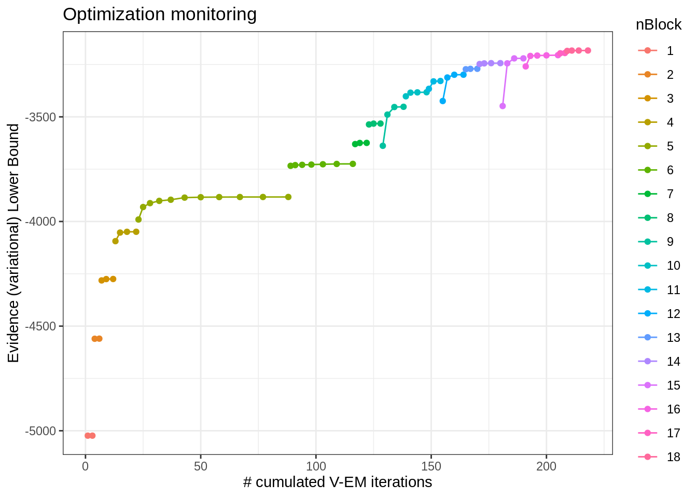
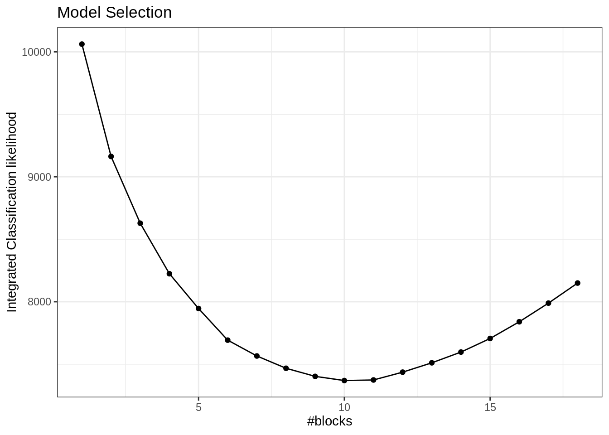
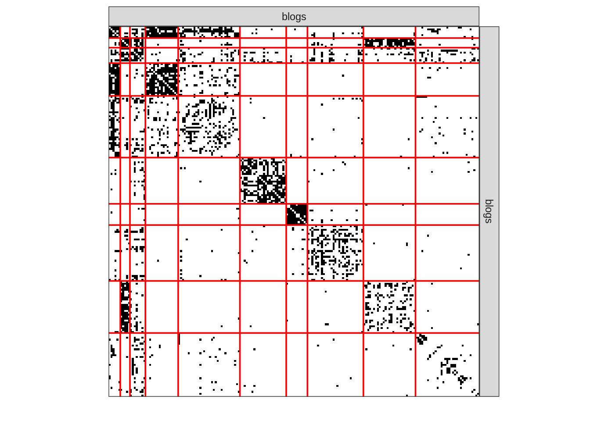

library(tidyverse)
library(igraph)
library(aricode)
library(missSBM)
library(sbm)
theme_set(theme_bw())Graph clustering
Lecture Notes
Preliminary
Functions from R-base and stats (preloaded) are required plus packages from the tidyverse for data representation and manipulation. The package igraph is a great library for network data manipulation (interface exists in Python)
We will also use the package mixtools, which implements EM for simple mixture models to check our own implementation.
$$
% definitions related to %%definitions related to convergences
%————————————————————————-% % Definitions %————————————————————————-%
\newcommand{W}{} \newcommand{W}{} \newcommand{W}{} $$
options(tinytex.engine = 'xelatex')1 Introduction
1.1 Network data and binary graphs: minimal notation
A network is a collection of interacting entities. A graph is the mathematical representation of a network.
In what follow, a graph \mathcal{G}=(\mathcal{V},\mathcal{E}) is a mathematical structure consisting of
- a set \mathcal{V}=\left\{1,\dots,n\right\} of vertices or nodes
- a set \mathcal{E}=\left\{e_1,\dots,e_p:e_k=(i_k,j_k)\in (\mathcal{V}\times\mathcal{V})\right\} of edges
- the number of vertices |\mathcal{V}| is called the order
- the number of edges |\mathcal{E}| is called the size
The connectivity of a binary undirected (symmetric) graph \mathcal{G}= (\mathcal{V},\mathcal{E}) is captured by the |\mathcal{V}|\times |\mathcal{V}| matrix Y, called the adjacency matrix (Y)_{ij} = \begin{cases} 1 & \text{ if } i \sim j,\\ 0 & \text{otherwise}. \end{cases} For a valued of weighted graph, a similar definition would be
(Y)_{ij} = \begin{cases} w_{ij} & \text{ if } i \sim j,\\ 0 & \text{otherwise}. \end{cases} where w_{ij} is the weight associated with edge i\sim j.
1.2 The French political Blogosphere
The frenchblog2007 data is a network dataset which consists of a single day snapshot of over 200 political blogs automatically extracted the 14 October 2006 and manually classified by the “Observatoire Présidentielle” project. It is part of the missSBM package. It is provided as an igraph object with 196 nodes. The vertex attribute “party” provides a classification of the nodes.
data("frenchblog2007")
summary(frenchblog2007)IGRAPH 7b93b75 UN-- 196 1432 --
+ attr: name (v/c), party (v/c)igraph::V(frenchblog2007)$party %>% table() %>% as_tibble() %>% rmarkdown::paged_table()A visual representation of the network data with nodes colored according to the political party each blog belongs to is achieved as follows:
Show the code
plot.igraph(frenchblog2007,
vertex.color = factor(V(frenchblog2007)$party),
vertex.label = NA
)
Another commonly used representation is via a matrix view, where the adjacency matrix is re-ordered column-wise and row-wise according to a predefined classification. In the frenchblog2007 data, nodes are originally reordered according to their party:
Show the code
frenchblog2007 %>% as_adj(sparse = FALSE) %>% plotMyMatrix()
Warning
In this example, one can see that the pattern of connections between the nodes is highly related to the blog classification (the political party). However, just like with any kind of clustering, this is note always the case: the data may support a natural grouping of the node which is not necessarily related a predefined classification.
Note
For convenience, in the following,
- we remove the isolated nodes or node with degree equal to one1
- we denote by Y the adjacency matrix encoding the network
- we extract the political party of the nodes as a categorical variable
** Our objective is now to automatically find a partitioning of the node, i.e. a clustering, that groups together nodes with similar connectivity pattern. This is known as graph clustering.**
blog <- frenchblog2007 %>% delete_vertices(which(degree(frenchblog2007) <= 1))
party <- V(blog)$party %>% as_factor()
Y <- blog %>% as_adjacency_matrix()
n_nodes <- gorder(blog)
n_edges <- gsize(blog)
party %>% table() %>% as_tibble() %>% rmarkdown::paged_table()2 Spectral Clustering
We start by a popular algorithm which can be seen as the equivalent of k-means algorithm for clustering network data: the spectral clustering (see Von Luxburg (2007)). This algorithm is based on the spectral properties of graph, and in particular of the Laplacian matrix, which we briefly recap here. A detail introduction is made by (Chung and Graham 1997).
Here, we motivate the introduction of the Laplacian matrix via the graph-cut problem:
2.1 Graph-cut
First, we need to measure the importance or quantity of information associated to a node or a subset of nodes in the graph. The degree is a natural candidate: we define
\begin{aligned} \mathrm{degree}_i & = d_i = \sum_{j} Y_{ij}, \\ \mathrm{Vol}(\mathcal{S}) & = \sum_{i\in\mathcal{S}} d_i , \\ \end{aligned} where the volume of a subset \mathcal{S} of nodes is the cumulated degrees2.
For instance, in the French blog data set, the volume associated to each party would be
degree(blog) %>% split(party) %>% map_dbl(sum) %>%
as_tibble() %>% rmarkdown::paged_table()Second, let us define the cut between two set of nodes that form a partition in the graph:
\mathrm{cut}(\mathcal{V}_A, \mathcal{V}_B) = \sum_{i\in\mathcal{V}_A, j\in\mathcal{V}_B} Y_{ij}, \qquad \mathcal{V}_A \cup \mathcal{V}_B = \mathcal{V} that is, the cut is the sum of the weights of the edge set that connect the two components clV_A and \mathcal{V}_B. For instance, in this simple binary graph, the graph cut between \mathcal{V}_A= \{1,2,3,4,10\} and \mathcal{V}_B= \{5,6,7,8,9\} is 2.

We can easily define a function to compute the cut
cut <- function(graph, A, B) {
res <- sum(as_adj(graph, type = "upper")[A , B])
res
}
V <- V(g)$name
A <- V[1:5]
B <- setdiff(V, A)
cut(g, A, B)[1] 2
Idea
A natural criterion to cluster a graph into two homogeneous groups of node is to find the two sets (the partition) that minimizes the cut.
Based on this principle, the normalized cut consider the connectivity between group relative to the volume of each groups:
\begin{aligned} \mathop{\mathrm{arg\ min}}_{\{\mathcal{V}_A, \mathcal{V}_B\}} \mathrm{cut}^{N}(\mathcal{V}_A, \mathcal{V}_B), \quad \mathrm{cut}^{N}(\mathcal{V}_A, \mathcal{V}_B) & = \frac{\mathrm{cut}(\mathcal{V}_A, \mathcal{V}_B)}{\mathrm{Vol}(\mathcal{V}_A)} + \frac{\mathrm{cut}(\mathcal{V}_A, \mathcal{V}_B)}{\mathrm{Vol}(\mathcal{V}_B)} \\ & = \mathrm{cut}(\mathcal{V}_A, \mathcal{V}_B)\frac{\mathrm{Vol}(\mathcal{V}_A) + \mathrm{Vol}(\mathcal{V}_B)}{\mathrm{Vol}(\mathcal{V}_A)\mathrm{Vol}(\mathcal{V}_B)} \\ \end{aligned}
Our function is easily amende to compute the normalized version of the graph-cut:
cut <- function(graph, A, B, normalized = TRUE) {
Y <- as_adj(graph, type="upper")
res <- sum(Y[A , B])
if (normalized) {
volA <- sum(Y[A, A])
volB <- sum(Y[B, B])
res <- res * (volA + volB) / (volA * volB)
}
res
}
A <- sample(1:gorder(blog), 100)
B <- setdiff(1:gorder(blog), A)
cut(blog, A, B)[1] 2.175796The above problem can be formalized as follows: a partition into two clusters of the graph can be defined by a vector of \{-1, 1\}^n. Indeed,
x = (x_i)_{i=1,\dots,n} = \begin{cases} -1 & \mathrm{if} \quad i\in \mathcal{V}_A, \\ 1 & \mathrm{if} \quad i\in \mathcal{V}_B. \\ \end{cases} Then, letting D the diagonal matrix of degrees, is not difficult to show that3
x^\top (D - Y) x = x^\top D x - ( x^\top D x - 2 \mathrm{cut} (\mathcal{V}_A, \mathcal{V}_B)), so that
\mathrm{cut} (\mathcal{V}_A, \mathcal{V}_B) = \frac12 x^\top (D - Y) x. From this, we can show that minimizing the normalized graph-cut is equivalent to solving an integer programming problem:
\begin{aligned} & \mathop{\mathrm{arg\ min}}_{\{\mathcal{V}_A, \mathcal{V}_B\}} \mathrm{cut}^{N}(\mathcal{V}_A, \mathcal{V}_B) \\[1.5ex] \Leftrightarrow \quad & \mathop{\mathrm{arg\ min}}_{x\in\{-1, 1\}^n} \frac{x^\top (D - Y) x}{x^\top D x}, \quad \text{s.c.} \quad x^\top D \mathbf{1}_n = 0, \end{aligned} where the constraint imposes only discrete values in x.
This problem is combinatorial (and NP-hard). However, if we relax to x\in[-1,1]^n, it turns to a simple eigenvalue problem
\mathop{\mathrm{arg\ min}}_{x\in[-1, 1]^n} x^\top (D - Y) x, \quad \text{s.c.} \quad x^\top D x = 1 \Leftrightarrow (D - Y) x = \lambda D x . where \mathbf{L}= D - Y is called the Laplacian matrix of the graph \mathcal{G}.
Proposition: Spectrum of \mathbf{L}
The n\times n matrix \mathbf{L} has the following properties: \mathbf{x}^\top \mathbf{L}\mathbf{x}= \frac{1}{2} \sum_{i,j} Y_{ij} (x_i - x_j)^2, \quad \forall \mathbf{x}\in\mathbb{R}^n .
- \mathbf{L} is a symmetric, positive semi-definite matrix,
- \mathbf{1}_n is in the kernel of L since L \mathbf{1}_n = 0,
- The first normalized eigen vector with eigen value \lambda> 0 is solution to the relaxed graph cut problem
The Laplacian is easily (and fastly) computed in R thanks to the igraph package. Let us compute this for the French blog graph:
L <- laplacian_matrix(blog)
Heuristics for spectral clustering
Spectral clustering exploits the spectral property of \mathbf{L}, by building heuristic based on the above properties. We review some variants in what follows.
2.2 Bi-partionning and the Fiedler vector
The Fiedler vector is the named sometimes given to the normalized eigen vector associated with the smallest positive eigen-value of \mathbf{L}. It thus solves the above relaxed graph-cut problem and can be used to compute a bi-partition of a graph.
Let us check how we can use theses quantities to partition the French blogosphere.
We first extract the Fiedler vector
spec_L <- eigen(L)
practical_zero <- 1e-12
lambda <- min(spec_L$values[spec_L$values>practical_zero])
fiedler <- spec_L$vectors[, which(spec_L$values == lambda)]Then, we plot the values of the Fiedler vector and color point according to the party to check if a part of the underlying structure of the network can indeed be found based on this quantity.
qplot(y = fiedler, colour = party) +
viridis::scale_color_viridis(discrete = TRUE)Also, and since the original motivation of the graph-cut is for two-way partionning, we collapse levels from the vector of party into a simplified left/right view (we keep the analysts into a third separated group)
left_vs_right <-
forcats::fct_collapse(party,
left = c("green", "left", "far-left", "center-left"),
right = c("right", "liberal", "center-rigth"),
analyst = "analyst"
)qplot(y = fiedler, colour = left_vs_right) +
viridis::scale_color_viridis(discrete = TRUE)We can see that there exists an optimum value (or threshold) to separate left from right: if we compute the adjusted Rand index4 between a bi-partionning obtained by thresholding the Fidler vector and our reference vector left_vs_right, we can see that there exists an optimal threshold maximizing this quantity:
thresholds <- seq(-.1, .1, len = 100)
ARIs <- map_dbl(thresholds, ~ARI(left_vs_right, fiedler > .))
qplot(thresholds, ARIs) + geom_vline(xintercept = thresholds[which.max(ARIs)]) + theme_bw()2.3 Spectral clustering algorithms
Various heuristics generalize the approach defined above to more than 2 groups. They all rely on the spectral property of the Laplacian given above, from which we can derive the following additional properties:
Spectrum and Graph
- The multiplicity of the first eigen value (0) of \mathbf{L} determines the number of connected components in the graph.
- The larger the second non trivial (positive) eigenvalue, the higher the connectivity of \mathcal{G}.
Based on these two properties, spectral clustering algorithms follow the following general principles:
- Compute spectral decompostion of \mathbf{L} to perform clustering in the eigen space
- For a graph with K connected components, the first K eigen-vectors are \mathbf{1} spanning the eigenspace associated with eigenvalue 0
- Applying a simple clustering algorithm to the rows of the K first eigenvectors separate the components
\rightsquigarrow The principle generalizes to a fully connected graph (with a single component): spectral clustering tends to separates groups of nodes which are highly connected together
Variants in the definition of the graph Laplacian
The normalized Laplacian matrix \mathbf{L} (see Ng, Jordan, and Weiss (2002)) is defined by
\mathbf{L}_N = \mathbf{D}^{-1/2}\mathbf{L}\mathbf{D}^{-1/2} = \mathbf{I}- \mathbf{D}^{-1/2} \mathbf{A}\mathbf{D}^{-1/2}.
The absolute Laplacian matrix \mathbf{L}_{abs} (see Rohe, Chatterjee, and Yu (2011)) is defined by
\mathbf{L}_{abs} = \mathbf{D}^{-1/2}\mathbf{A}\mathbf{D}^{-1/2} = \mathbf{I}- \mathbf{L}_N, with eigenvalues 1-\lambda_n \leq \dots \leq 1-\lambda_2 \leq 1-\lambda_1 = 1, where 0=\lambda_1\leq \dots \leq \lambda_n are the eigenvalues of \mathbf{L}_N.
Pseudo code for normalized spectral clustering
As described in Ng, Jordan, and Weiss (2002)
- Compute the laplacian matrix \mathbf{L};
- Compute the n\times K matrix \mathbf{U} of eigen vectors with the K smallest eigen values
- Normalize \mathbf{U} row-wise
- Apply k-means to (\tilde{\mathbf{U}}_i)_{i=1,\dots,n}
spectral_clustering <- function(graph, nb_cluster, normalized = TRUE) {
## Compute Laplcian matrix
L <- laplacian_matrix(graph, normalized = normalized)
## Generates indices of last (smallest) K vectors
selected <- rev(1:ncol(L))[1:nb_cluster]
## Extract an normalized eigen-vectors
U <- eigen(L)$vectors[, selected, drop = FALSE] # spectral decomposition
U <- sweep(U, 1, sqrt(rowSums(U^2)), '/')
## Perform k-means
res <- kmeans(U, nb_cluster, nstart = 40)$cl
res
}Let use perform spectral clsutering on the blogosphere for various number of group:
nb_cluster <- 1:20
map(nb_cluster, ~spectral_clustering(blog, .)) %>%
map_dbl(ARI, party) %>%
qplot(nb_cluster, y = .) + geom_line() + theme_bw()
Once reorder according to the best clustering (obtained k=6) groups, the orginal data matrix looks as follows
Show the code
plotMyMatrix(as_adj(blog, sparse = FALSE),
clustering = list(row = spectral_clustering(blog, 6)))
Some limitations
Hence, as expected, spectral clustering does a great job for recovering community structure in the network. Yet,
- What if other kind of patterns (like star/hub nodes) structure the network
- What if we do not have any clue on the target number of cluster?
A model-based approach, like the one presented below, overcomes these issues
3 Model-based clustering for graph data
Motivation
We are still looking for an underlying organization in a observed network, yet with model-based approaches, so that statistical inference would be possible.
This session essentially aims to present the stochastic block model, a random graph model tailored for clustering vertices. As will be seen, this model is can be interpreted as a special mixture model for graph data. Hence, the relationship between spectral clustering for network and the Stochastic block model is the same as the one between the k-means clustering and Gaussian mixture models.
3.1 The Erdös-Renyi model
We start by the most simple, yet natural model for random graph, the Erdös-Rényi model.
Definition 1 (Erdös-Rényi model) Let \mathcal{V}= {1,\dots,n} be a set of fixed vertices. The (simple) Erdös-Rényi model \mathcal{G}(n,\pi) assumes random edges between pairs of nodes with probability \pi. In orther word, the (random) adjacency matrix Y is such that
Y_{ij} \sim \mathcal{B}(\pi)
A direct consequence is that the distribution of the (random) degree D_i of a vertex i follows a binomial distribution, i.e.,
D_i \sim b(n -1, \pi).
G1 <- igraph::sample_gnp(10, 0.1)
G2 <- igraph::sample_gnp(10, 0.9)
G3 <- igraph::sample_gnp(100, .02)
par(mfrow=c(1,3))
plot(G1, vertex.label=NA) ; plot(G2, vertex.label=NA)
plot(G3, vertex.label=NA, layout=layout.circle)
Because of its simplicity, a lot of mathematical derivation can be done with this model, yet its utility for adjusting real-world network is very limited since
- the degree distribution is too concentrated, with no high degree nodes,
- All nodes are equivalent,
- No modularity is observed.
For instance, for the graph G3 sampled above, the empirical degree distribution and and basic clustering support the over homogeneous structure of the ER model.

3.2 The Stochastic Block Model (SBM)
The SBM generalizes the Erdös-Rényi model in a mixture framework (see Nowicki and Snijders (2001), Daudin, Picard, and Robin (2008)). It provides
- a statistical framework to adjust and interpret the parameters
- a flexible yet simple specification that fits many existing network data
Stochastic Block Model: definition
Let
- \{1, \dots, n \} be some fixed nodes,
- with some unknown colors picked up from \mathcal{C}=\{\color{#fab20a}{\bullet},\color{#0000ff}{\bullet},\color{#008000}{\bullet}\}
Denote by
- \alpha_\bullet = \mathbb{P}(i \in \bullet), \bullet\in\mathcal{C} the prior probability of group memberships,
- \pi_{\color{#fab20a}{\bullet}\color{#0000ff}{\bullet}} = \mathbb{P}(i \leftrightarrow j | i\in\color{#fab20a}{\bullet},j\in\color{#0000ff}{\bullet}), the probability of connexion between groups.
In the binary Stochastic Block Model, the adjacency matrix Y_{ij} is random, with probability of connexion between a dyad (i,j) being defined conditionnaly on their respective group memberships, described by a vector of random variables (Z_i)_{i=1,\dots,n}.
\begin{aligned} Z_i = \mathbf{1}_{\{i \in \bullet\}} \ & \sim^{\text{iid}} \mathcal{M}(1,\alpha), \\ Y_{ij} \ | \ \{i\in\color{#fab20a}{\bullet},j\in\color{#0000ff}{\bullet}\} & \sim^{\text{ind}} \mathcal{B}(\pi_{\color{#fab20a}{\bullet}\color{#0000ff}{\bullet}})\\ \end{aligned}
3.2.1 A generative model
The SBM does not assume assume any particular a priori structure of the network: because it is a probabilistic, generative model, we can easy simulate SBM-based network data with various topologies Here are a few examples:
- Community network
pi <- matrix(c(0.3,0.02,0.02,0.02,0.3,0.02,0.02,0.02,0.3),3,3)
communities <- igraph::sample_sbm(100, pi, c(25, 50, 25))
plot(communities, vertex.label=NA, vertex.color = rep(1:3,c(25, 50, 25)))
- Star network
pi <- matrix(c(0.05,0.3,0.3,0),2,2)
star <- igraph::sample_sbm(100, pi, c(4, 96))
plot(star, vertex.label=NA, vertex.color = rep(1:2,c(4,96)))
3.2.2 Degree distribution
Because it is defined as a simple mixture of Erdös-Rényi, the degree distribution of the binary SBM has a simple close form
Definition 2 (SBM: Degree distribution) The conditional degree distribution of a node i\in q is
D_i | i \in q \sim \mathrm{b}(n-1,\bar\pi) \approx \mathcal{P}(\lambda_q), \qquad \bar\pi_q = \sum_{\ell=1}^Q \alpha_\ell \pi_{q\ell}, \quad \lambda_q = (n-1)\bar\pi_q
From this, we deduce the degree distribution of a node i, which can be approximated by a mixture of Poisson distributions:
\mathbb{P}(D_i = k) = \sum_{q=1}^Q\alpha_q \exp{\left\{-\lambda_q\right\}} \ \frac{\lambda_q^k}{k !}
4 Estimation: Variational Inference of the binary SBM
4.1 SBM: a latent variable model
Recall tha we have fixed nodes \{1, \dots, n \} with hidden colors \mathcal{C}=\{\color{#fab20a}{\bullet},\color{#0000ff}{\bullet},\color{#008000}{\bullet}\}. We observe the following
We need to estimate the model parameters and the clustering:
- \theta = \{\boldsymbol\alpha = (\alpha_\bullet), \boldsymbol\Pi = (\pi_{\color{#fab20a}{\bullet}\color{#0000ff}{\bullet}})\}
- Colors of i, i.e. the \mathbf{Z}_i (the clustering)
Just like with Gaussian mixture models, maximizing the marginal log likelihood is not straightforward
\ell_\theta(\mathbf{Y}_i) = \log p_\theta(\mathbf{Y}_i) = \log \int_{\mathcal{Z}} \prod_{(i,j)} p_\theta(Y_{ij} | Z_i, Z_j ) \, p_\theta(\mathbf{Z}) \mathrm{d}\mathbf{Z}
Integration over \mathcal{Z} = \otimes_{k=0,\dots,K}\{1,\dots, C_k\}^{n_k} is intractable: we have \mathrm{card}(C)^n terms!
The natural solution is to maximum the likelihood via an EM algorithm, which use the following decomposition of the loglikelihood:
\log p_\theta(\mathbf{Y}) = \mathbb{E}_{p_\theta(\mathbf{Z}\,|\,\mathbf{Y})} [\log p_\theta(\mathbf{Y}, \mathbf{Z})] + \mathcal{H}[p_\theta(\mathbf{Z}\,|\,\mathbf{Y})], \quad \text{ with } \mathcal{H}(p) = -\mathbb{E}_p(\log(p))
Intractable EM
EM requires to evaluate (some moments of) p_\theta(\mathbf{Z}\,|\,\mathbf{Y}), which is not known for the SBM (and was explicit for Gaussian mixture models).
One could use (at least)
- MCMC/Bayesian approaches for evaluating quantities depending on p_\theta(\mathbf{Z}\,|\,\mathbf{Y})$
- Variational approaches, which generalize EM by approximating p_\theta(\mathbf{Z}\,|\,\mathbf{Y})
4.2 Variational approach: general case
The idea is to find a proxy q_\psi(\mathbf{Z}) \approx p_\theta(\mathbf{Z} | \mathbf{Y}) picked in a convenient class of distribution \mathcal{Q}
q(\mathbf{Z})^\star \arg\min_{q\in\mathcal{Q}} D\left(q(\mathbf{Z}), p(\mathbf{Z} | \mathbf{Y})\right).
Küllback-Leibler is a popular choice .small[(error averaged wrt the approximated distribution)]
KL\left(q(\mathbf{Z}), p(\mathbf{Z} | \mathbf{Y})\right) = \mathbb{E}_q\left[\log \frac{q(z)}{p(z)}\right] = \int_{\mathcal{Z}} q(z) \log \frac{q(z)}{p(z)} \mathrm{d}z.
For mixture model, the natural class of distribution used for approximation is the multinomial
\mathcal{Q} = \Big\{q_\psi: \, q_\psi(\mathbf{Z}) = \prod_i q_{\psi_i}(\mathbf{Z}_i), \, q_{\psi_i}(\mathbf{Z}_i) = \mathcal{M}\left(\mathbf{Z}_i; \boldsymbol\tau_i\right), \, \psi_i = \{\boldsymbol{\tau}_i\}, \boldsymbol{\tau}_i \in \mathbb{R}^{K} \Big\}
And we maximize the ELBO (Evidence Lower BOund), a lower bound of the log-likelihood:
J(\theta, \psi) = \log p_\theta(\mathbf{Y}) - KL[q_\psi (\mathbf{Z}) || p_\theta(\mathbf{Z} | \mathbf{Y})] = \mathbb{E}_{q} [\log p_\theta(\mathbf{Y}, \mathbf{Z})] + \mathcal{H}[q_\psi(\mathbf{Z})]
The variational EM has the following form
Initialization: get \mathbf{T}^0 = \{\tau_{ik}^0\} with Absolute Spectral Clustering
M step: update \theta^h = \{ \boldsymbol\alpha^h, \boldsymbol\Pi^h\}
VE step: find the optimal q_\psi, by updating \psi^h= (\psi^h_{i})_i = \mathbf{T}^{h} = \mathbb{E}_{q^{h}} (\mathbf{Z}):
\psi^h = \arg \max J(\theta^h, \psi) = \arg\min_{\psi} KL[q_\psi(\mathbf{Z}) \,||\, p_{\theta^h}(\mathbf{Z}\,|\,\mathbf{Y})]
\theta^h = \arg\max J(\theta, \psi^h) = \arg\max_{\theta} \mathbb{E}_{q_{\psi^h}} [\log p_{\theta}(\mathbf{Y}, \mathbf{Z})]
4.3 Variational EM for SBM: ingredients
We now derive the quantity for the special case of SBM:
4.3.1 Variational bound
J(\theta, \tau ; \mathbf{Y}) = \sum_{(i,j)} \sum_{(k,\ell)} \tau_{ik} \tau_{j\ell} \log b(Y_{ij},\pi_{k\ell }) + \sum_{i} \sum_{k} \tau _{ik} \log (\alpha_k/\tau_{ik})
4.3.2 M-step (Analytical)
\alpha_k = \frac{1}{n} \sum_{i} \tau_{i k} , \quad \pi_{k\ell } = \frac{\sum_{(i,j)} \tau_{ik}\tau_{j\ell} Y_{ij}}{\tau_{ik}\tau_{j\ell}} \qquad \left({\boldsymbol\alpha} = \mathbf{1}_n^\top\mathbf{T}, \quad {\boldsymbol\Pi} = \frac{\mathbf{T}^\top \mathbf{Y} \mathbf{T}}{\mathbf{T}^\top \mathbf{T}} \right)
4.3.3 Variational E-step (fixed point)
\tau_{ik} \varpropto \alpha_k \prod_{(i,j)} \prod_{\ell} b(Y_{ij} ; \pi_{k\ell})^{\tau_{j\ell}}
4.3.4 Model Selection
\mathrm{vICL}(K) = \mathbb{E}_{q} [\log L(\hat{\theta)}; \mathbf{Y}, \mathbf{Z}] - \frac{1}{2} \left(\frac{K(K+1)}{2} \log \frac{n(n-1)}{2} + (K-1) \log (n) \right)
4.4 SBM: the french blogosphere
There exist a variety of packages to fit SBM: we advice here using sbm and misssbm to stick to the course5
blocks <- 1:18
sbm_full <- estimateMissSBM(as_adj(blog), blocks, "node")
Adjusting Variational EM for Stochastic Block Model
Imputation assumes a 'node' network-sampling process
Initialization of 18 model(s).
Performing VEM inference
Model with 13 blocks.
Model with 1 blocks.
Model with 3 blocks.
Model with 11 blocks.
Model with 15 blocks.
Model with 7 blocks.
Model with 14 blocks.
Model with 2 blocks.
Model with 5 blocks.
Model with 4 blocks.
Model with 6 blocks.
Model with 10 blocks.
Model with 9 blocks.
Model with 16 blocks.
Model with 18 blocks.
Model with 12 blocks.
Model with 17 blocks.
Model with 8 blocks.
Looking for better solutions
Pass 1 Going forward +++++++++++++++++
Pass 1 Going backward +++++++++++++++++
4.4.1 Convergence monitoring (ELBO)
plot(sbm_full, "monitoring")
4.4.2 Model Selection (vICL)
plot(sbm_full)
4.4.3 Parameters
plot(sbm_full$bestModel, "meso")
4.4.4 Clustering I
plot(sbm_full$bestModel, dimLabels = list(row = "blogs", col = "blogs"))
4.4.5 Clustering II
plot(sbm_full$bestModel, "expected", dimLabels = list(row = "blogs", col = "blogs"))
4.4.6 Clustering III
sp_clustering <- spectral_clustering(blog, sbm_full$bestModel$fittedSBM$nbBlocks)
map(sbm_full$models, "fittedSBM") %>%
map("memberships") %>%
map_dbl(ARI, party) %>%
qplot(blocks, y = .) + theme_bw()
References
Chung, Fan RK, and Fan Chung Graham. 1997. Spectral Graph Theory. 92. American Mathematical Soc.
Daudin, J-J, Franck Picard, and Stéphane Robin. 2008. “A Mixture Model for Random Graphs.” Stat. Comp. 18 (2): 173–83.
Ng, Andrew Y, Michael I Jordan, and Yair Weiss. 2002. “On Spectral Clustering: Analysis and an Algorithm.” In Advances in Neural Information Processing Systems, 849–56.
Nowicki, K., and T. A. B. Snijders. 2001. “Estimation and Prediction for Stochastic Blockstructures.” J. Am. Stat. Soc. 96 (455): 1077–87.
Rohe, Karl, Sourav Chatterjee, and Bin Yu. 2011. “Spectral Clustering and the High-Dimensional Stochastic Blockmodel.” The Annals of Statistics 39 (4): 1878–1915.
Von Luxburg, Ulrike. 2007. “A Tutorial on Spectral Clustering.” Statistics and Computing 17 (4): 395–416.
Footnotes
A “nice” side-effect is that the ‘far-right’ blogs have removed from the study. Amazing for data collected only a decade ago…↩︎
Note that this definition works for weighted graphs.↩︎
let as an exercise↩︎
a measure of comparison between two classification↩︎
I have been involved in their development and they share some classes and have very similar interfaces↩︎